13,8 miljardi gadu
Visuma vecums, ko aprēķina pēc kosmiskā mikroviļņu fona starojuma.
Virtuālā izstāde
Izstāde par kosmosa izpēti: seši atklājumi no 1610. līdz 2022. gadam, trīs jautājumi, uz kuriem vēl nav zināma atbilde, un attēlu galerija ar astoņiem kosmosa objektiem.
Sāc pastaigu →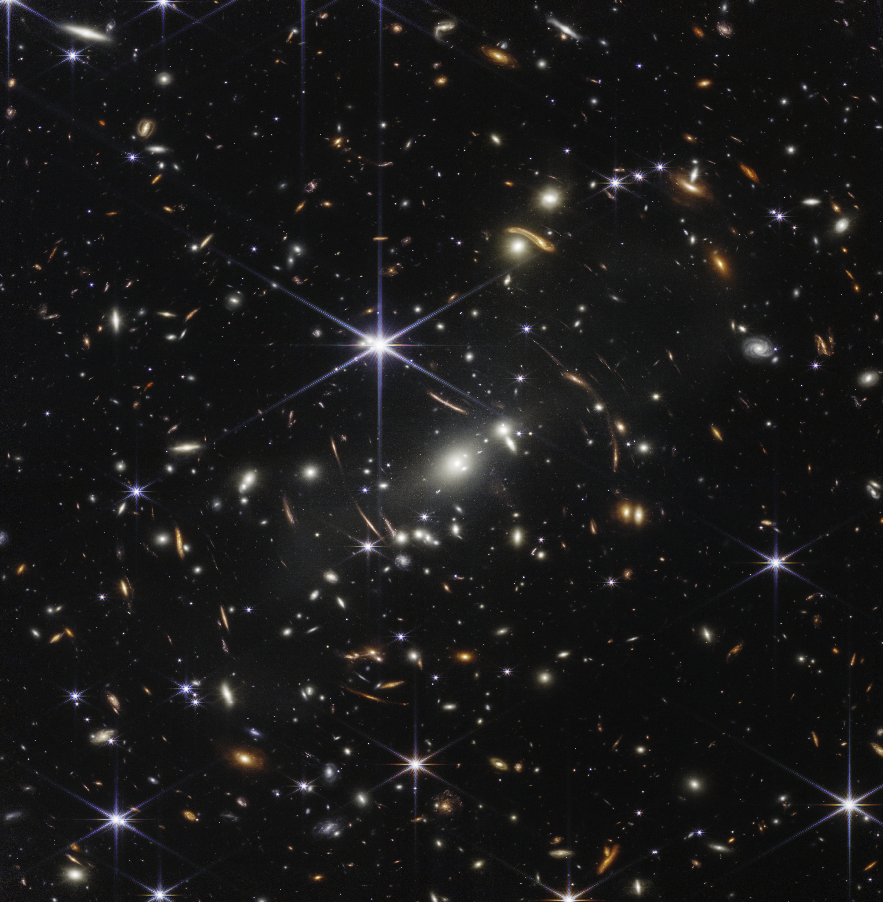
Izstāde parāda, kā cilvēki pētījuši kosmosu: no Galileo Galileja teleskopa 1610. gadā līdz Džeimsa Veba kosmiskajam teleskopam, kas darbojas kopš 2022. gada.
Sadaļā "Atklājumi" ir seši notikumi hronoloģiskā secībā. Sadaļā "Noslēpumi" ir trīs jautājumi, kuru atbildes vēl nav zināmas Galerijā un karuselī ir kosmosa objektu attēli ar īsiem aprakstiem.
Visuma vecums, ko aprēķina pēc kosmiskā mikroviļņu fona starojuma.
Aptuvens galaktiku skaits novērojamajā Visumā.
Merkurs, Venera, Zeme, Marss, Jupiters, Saturns, Urāns un Neptūns riņķo ap Sauli.
Galileo Galilejs ar paša būvētu teleskopu janvārī pamanīja pie Jupitera četrus gaismas punktus un vairākas naktis sekoja to kustībai. Tie izrādījās pavadoņi Io, Eiropa, Ganimēds un Kallisto, kas riņķo ap Jupiteru, nevis ap Zemi.
12. aprīlī Jurijs Gagarins ar kuģi Vostok 1 vienreiz apriņķoja Zemi. Lidojums ilga 108 minūtes.
20. jūlijā Apollo 11 mēness modulis nolaidās uz Mēness. Nīls Ārmstrongs bija pirmais cilvēks uz tā virsmas, pēc viņa izkāpa Baz Oldrins.
24. aprīlī Habla kosmiskais teleskops tika palaists orbītā. Tas atrodas ārpus Zemes atmosfēras, tāpēc attēli ir asāki nekā no zemes teleskopiem. Ar tā datiem ir precizēts Visuma izplešanās ātrums.
10. aprīlī sadarbība Event Horizon Telescope publicēja pirmo melnā cauruma ēnas attēlu. Caurums atrodas galaktikā M87, aptuveni 55 miljonu gaismas gadu attālumā. Attēls iegūts, apvienojot radioteleskopu datus no vairākām vietām pasaulē.
12. jūlijā tika publicēti pirmie Džeimsa Veba kosmiskā teleskopa attēli. Teleskops novēro infrasarkano starojumu, tāpēc redz ļoti tālas galaktikas un var noteikt gāzu sastāvu eksoplanētu atmosfērās.
Vietas, kur gravitācija ir tik spēcīga, ka no tām neizkļūst pat gaisma. Mūsu galaktikas centrā atrodas Strēlnieks A* ar aptuveni 4 miljonu Saules masu. Kas notiek pašā cauruma centrā, zinātnieki nezina, jo tur vispārīgā relativitātes teorija vairs neder.
Planētas, kas riņķo ap citām zvaigznēm. Apstiprinātas ir 6473. Dažas atrodas zvaigznes apdzīvojamajā zonā, kur temperatūra pieļauj šķidru ūdeni, bet dzīvības pazīmes vēl nav atrastas.
Zvaigznes veidojas gāzu un putekļu mākoņos, piemēram, Oriona miglājā. Kad mākonis saspiežas, tā centrā sākas kodolsintēze. Kas tieši nosaka jaunās zvaigznes masu, joprojām tiek pētīts.
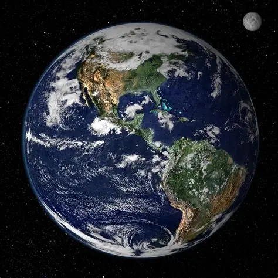
Trešā planēta no Saules, aptuveni 150 miljonu km attālumā. Vienīgā zināmā planēta ar dzīvību.
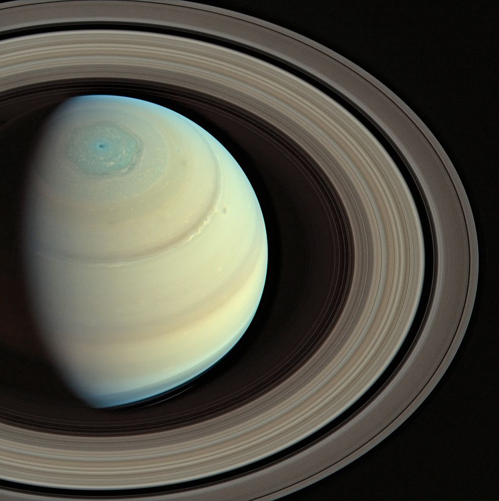
Sastāv galvenokārt no ūdens ledus gabaliem, kuru izmērs ir no putekļu graudiem līdz vairākiem metriem.
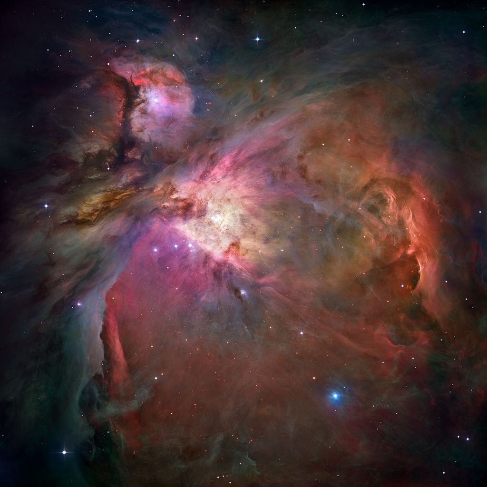
Zvaigžņu veidošanās apgabals aptuveni 1350 gaismas gadu attālumā. Ar neapbruņotu aci redzams kā neskaidrs plankums.
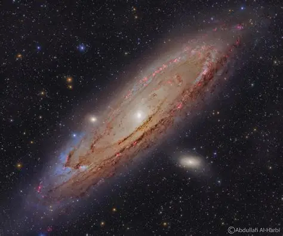
Spirālveida galaktika 2,5 miljonu gaismas gadu attālumā. Tuvākā lielā galaktika Piena Ceļam.
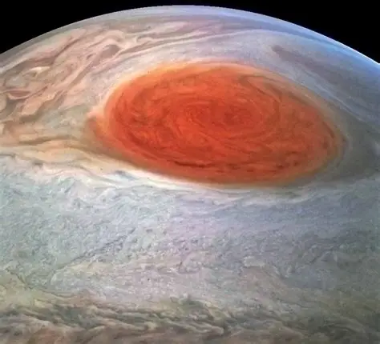
Vētra Jupitera atmosfērā, ko novēro jau vairāk nekā 150 gadus. Plankums ir platāks par Zemi.
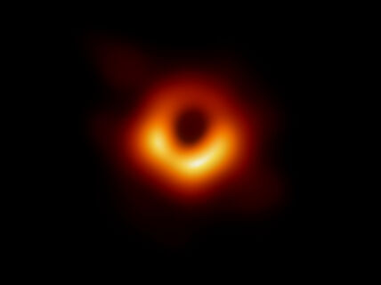
Attēlos redzama kā tumšs aplis gaismas gredzena vidū. Aiz notikumu horizonta gaisma vairs nevar izkļūt.
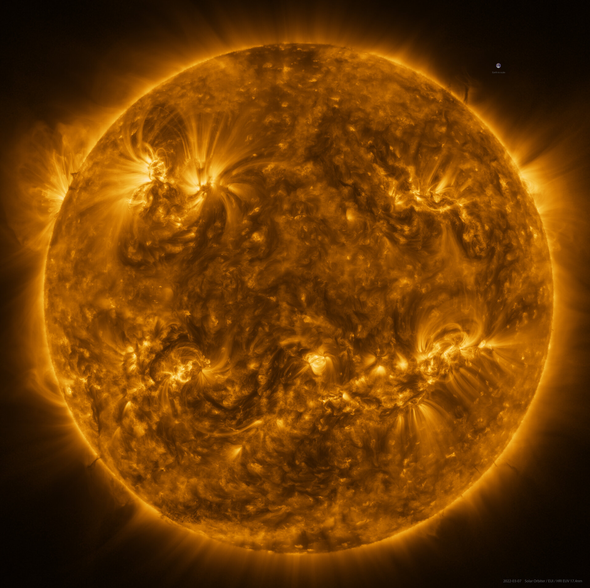
Saules ārējā atmosfēra ir karstāka par miljonu grādu, bet virsmas temperatūra ir apmēram 5500 °C. Iemesls joporjām tiek pētīts.
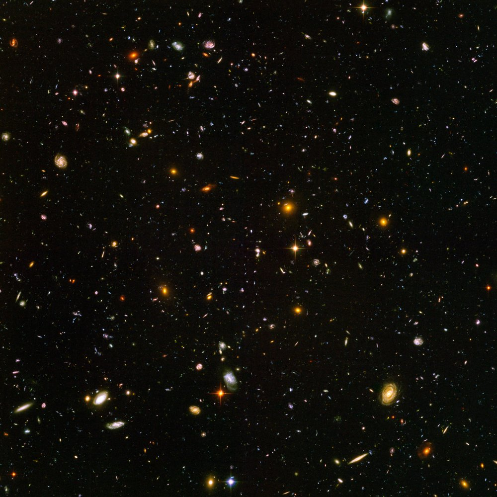
Dažu galaktiku gaisma līdz Džeimsa Veba teleskopam ceļojusi vairāk nekā 13 miljardus gadu.
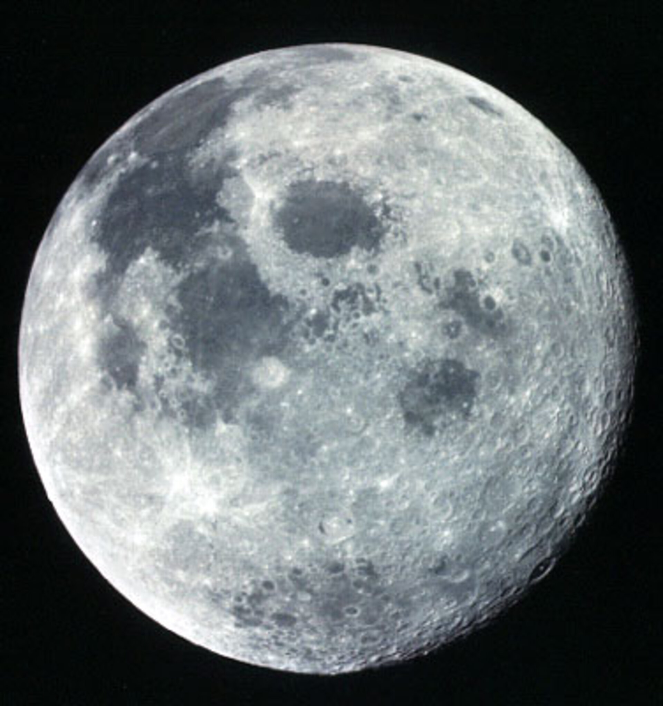
Zemes vienīgais dabiskais pavadonis, aptuveni 384 000 km attālumā. Uz tā virsmas ir staigājuši 12 cilvēki.
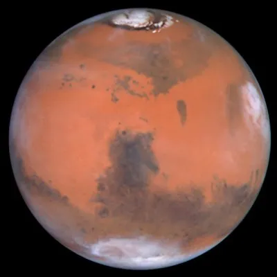
Marsa diena ir par aptuveni 40 minūtēm garāka nekā Zemes diena. Olympus Mons ir augstākais zināmais vulkāns Saules sistēmā, aptuveni 22 km augsts.
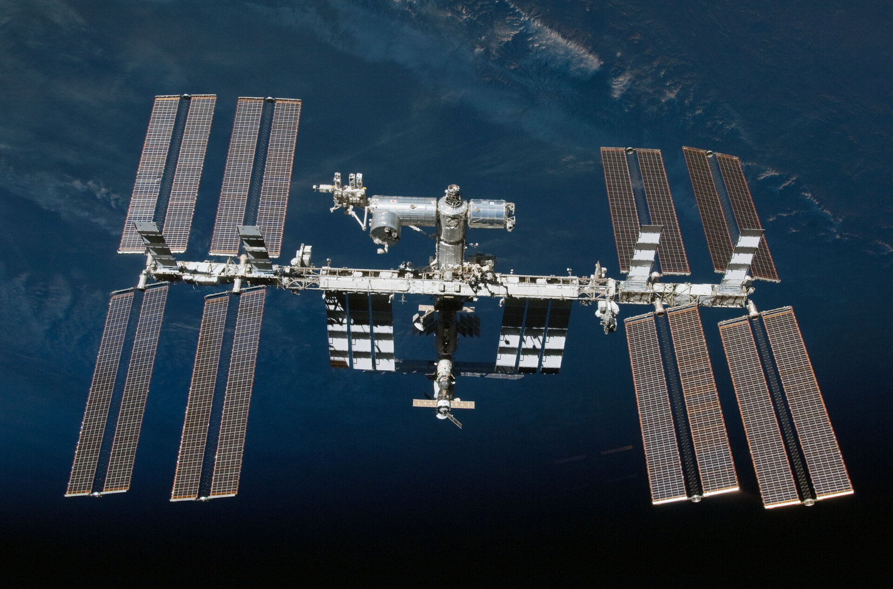
Riņķo ap Zemi aptuveni 400 km augstumā un apriņķo to apmēram katras 90 minūtes. Cilvēki tajā dzīvo nepārtraukti kopš 2000. gada.
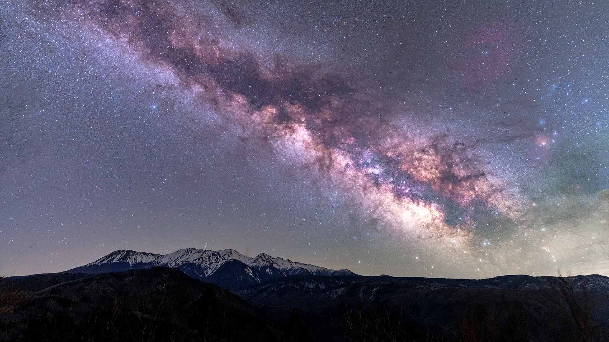
Mūsu galaktikas diametrs ir aptuveni 100 000 gaismas gadu. Saule atrodas vienā no tās spirālveida rokām.
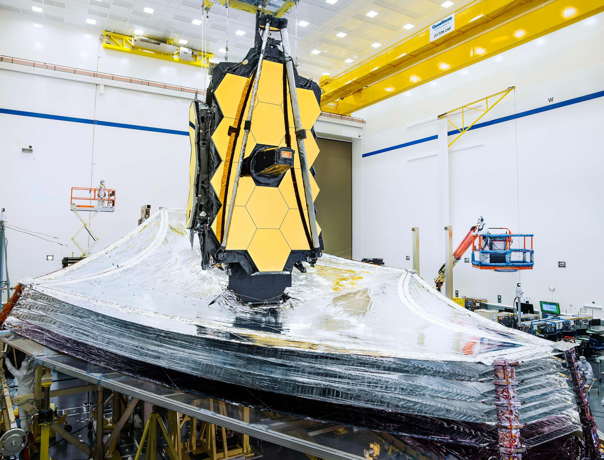
Galvenais spogulis sastāv no 18 zeltīta berilija segmentiem un ir 6,5 m diametrā.